Repaso de la Tanda 10N
La cabecera, el modo sin pase, compartir el viaje con sus permisos, la propuesta del invitado, RESERVAS y el presupuesto compartido. Marca cada punto en tu teléfono cuando lo hayas comprobado (se guarda en este navegador).
§0 · Antes de empezar ✅ Hecho — Prompt guardado en docs/dias/PROMPT_TANDA10N.md y en el commitDónde: No es de móvil. ✅ Hecho — Design al día con DESIGN_26OCT.zip (docs/diseno/proyecto/, sin uploads/ ni screenshots/): Viaje Compartido, Presupuesto Compartido, Propuesta Cambios/Boton, Reservas v4, App Ruta y días, App Reservas y presupuestoTambién entraron Cuentas Grupo y Pase Fundador (10N2 y 10Q): solo el diseño, sin tocar su código. Dónde: No es de móvil. §1 · Crear el viaje ✅ Hecho — Foto del Castillo de Sant'Angelo en «Elige lo que siempre soñaste ver»: castillo y puente, licencia libre, fuente apuntadaYa la dejó la Tanda 10O (dia_castillo_sant_angelo_fuera.jpg, 1600 px y _p 640 px, Jean-Pol GRANDMONT, CC BY-SA 3.0, crédito en _fotos.json). El servidor la sirve para el Castillo; no hubo que descargar otra. Si el móvil de Eric aún enseña la terraza es caché del navegador (24 h, poolphoto:v2) o la versión desplegada antes de la 10O. Dónde: Formulario › paso «Elige lo que siempre soñaste ver en Roma» › baldosa «Castillo de Sant'Angelo» (cuenta cualquiera, con o sin pase; borra los datos del sitio si sigue la vieja) §2 · La cabecera ✅ Hecho — Fuera «Roma / 26 – 29 nov · 2 personas»; en su lugar el logo de JUTRIP (Italiana con la estrella sobre la I)Dónde: Cualquier pestaña, arriba a la izquierda (dueño o invitado, con o sin pase) ✅ Hecho — La misma cabecera en todas las pestañas: logo, cartera, campana y perfil; «Sin pase (prueba)» sigue donde estáRESERVAS tenía su propia cabecera (✕ + «Reservas» + cartera): ahora lleva la cabecera común y su fila ✕ + «Reservas» queda debajo sin la cartera. Dónde: RUTA, DÍAS, EXPLORAR, HOY y RESERVAS: arriba. Con «Verme como viajero sin pase» encendido (cuenta admin) sale la etiqueta arriba al centro 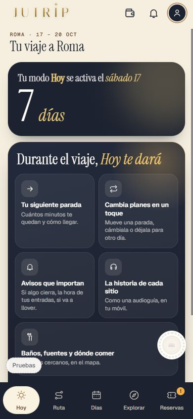
✅ Hecho — Decir dónde más se ve el número de personas del viajeSe sigue viendo en: Presupuesto (el «por persona»), hoja del alojamiento, formulario de reservas (precio por persona), HojaPrecio y la compra del pase (¿Cuántos sois? Dúo/Grupo, precioPelicula/pagoPase). El dato es personasDelViaje(route) en src/lib/useMoneda.ts; también se ve al escoger compañía en el formulario. En el código ya no hay ningún sitio de la cabecera que lo pinte (subtituloDelViaje quedó sin usar). Dónde: RESERVAS › Presupuesto (cartera), RUTA › Pase de Roma › ¿Cuántos sois? ✅ Hecho — El invitado ve «Viaje de Eric» en la tarjeta del destino de RUTA, debajo de «Roma»Lo pone la tarjeta del destino de RUTA (trabajo de la parte de compartir): «Viaje de Eric» debajo de «Roma» para quien no es el dueño. Dónde: RUTA, con la cuenta de un invitado (Puede editar o Solo recomendar), con o sin pase. 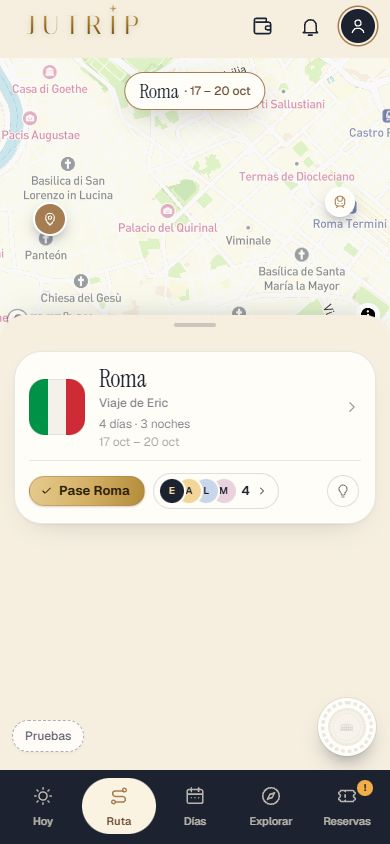
§2 · Cabecera (parte mía) ✅ Hecho — El invitado ve «Viaje de Eric» debajo de «Roma» en la tarjeta del destino de RUTADónde: RUTA, tarjeta del destino, con una cuenta invitada (no dueña) §3 · Modo sin pase y [Empezar de cero] ✅ Hecho — [Empezar de cero] no apaga «Verme como viajero sin pase» (no borra admin_sin_pase)Se quitó la tabla de la lista de la migración 0032 (hay que volver a pegar la 0032 en Supabase para que la base deje de borrarla) y, mientras no se haga, server/logros/reiniciar.js lee la fila antes y la devuelve después. pruebaTanda10J actualizada (admin_sin_pase pasa a «se queda»). Dónde: Perfil › Ajustes › [Empezar de cero] con la cuenta de Eric, teniendo «sin pase» encendido en /?admin=logros: al volver, la etiqueta «Sin pase (prueba)» sigue ✅ Hecho — RUTA (pastilla «✓ Pase de Roma») y HOY (tarjeta con candado) dicen lo mismo; de dónde sale el pase; con «sin pase» no sale en ningún sitioCausa: la pastilla de RUTA miraba pagoActivo() (el interruptor de pruebas PAGO_ACTIVO=true, no el pase real) y HOY miraba al servidor (/api/pase/estado): con la cuenta sin pase real, RUTA decía «con» y HOY «sin». No viene del Probador. Ahora pagoActivo() también obedece al servidor (cobro encendido y sin pase = sin pase) y la pastilla usa usePaseEstado, igual que HOY. Con «sin pase» encendido siempre sale «sin». Dónde: RUTA › pastilla del pase junto al destino y HOY (antes del viaje): cuenta de Eric tras [Empezar de cero], y con «sin pase» encendido 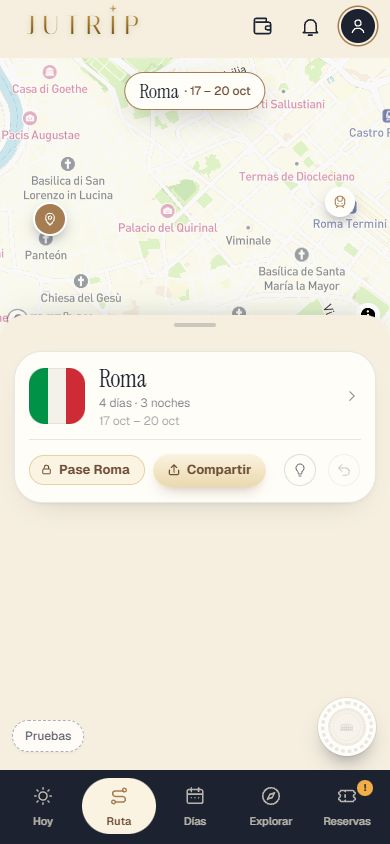
✅ Hecho — Tarjeta «Durante el viaje, Hoy te dará» sale de la misma lista que el final de la película; cualquier otra lista del pase escrita aparte, a la mismaHoyAntesV2 usaba una lista escrita a mano (VISTA_PREVIA); ahora pinta filasDeHoy() (listaDeHoy → listaAjustada), con 5 tarjetas y la última a todo el ancho. Búsqueda de otras listas del pase escritas aparte: no queda ninguna (HoyAntes/ListaLoQueTendras, «Todo lo que incluye» y la película ya salían de la misma). Dónde: HOY antes del viaje (viaje con fechas futuras, sin pase o con pase) §4 · Compartir el viaje ✅ Hecho — Título «Invita a los tuyos a tu viaje a Roma» (Roma del dato)Dónde: RUTA > [Compartir], dueño sin pase Dúo/Grupo 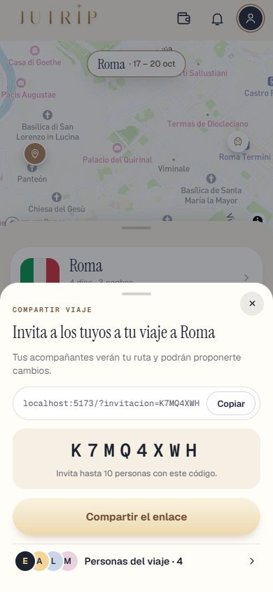
✅ Hecho — Debajo del título: «Tus acompañantes verán tu ruta y podrán proponerte cambios.»Dónde: RUTA > [Compartir], dueño ✅ Hecho — Recuadro del código: «Invita hasta 10 personas con este código.» (confirmado: son 10); con Dúo/Grupo se queda «1 de 2 plazas del pase usadas»10 = PLAZAS_SIN_PASE, el mismo número con el que ya se creaba la invitación Dónde: RUTA > [Compartir], dueño (sin pase Dúo/Grupo para el texto nuevo) ✅ Hecho — El mismo código para el mismo viaje; solo se crea otro si se gastó o se anuló; los códigos ya creados siguen valiendoProbado con la lógica (invitacionReutilizable) y la base de datos de prueba; con Supabase real hay que abrir la hoja dos veces y ver el mismo código Dónde: RUTA > [Compartir], cerrar y volver a abrir: mismo código (dueño, cuenta real) §4a · Personas del viaje ✅ Hecho — Tres permisos: Administrador / Puede editar / Solo recomendar, con sus reglasReglas en la migración 0036 (SIN APLICAR) y probadas en PGlite; sin aplicarla todos los invitados cuentan como «Solo recomendar» Dónde: Personas del viaje (caras en la tarjeta de RUTA) 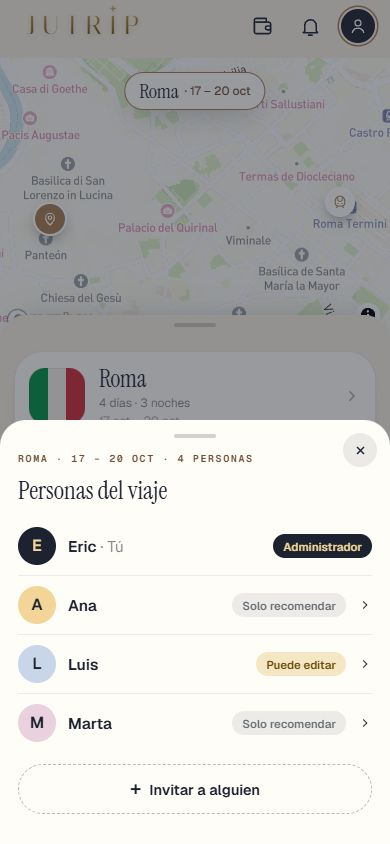
⚠️ A medias — Administrador: único que invita, quita, cambia permisos, fechas, vuelo/alojamiento y borraServidor: invitar, quitar, permisos y borrar solo del dueño (probado). Fechas/vuelo/alojamiento bloqueados al editor en la base de datos. Falta ocultar en la interfaz el botón de fechas y poner en gris RESERVAS para el editor (RESERVAS es de D1) Dónde: Cuenta con «Puede editar»: intentar cambiar fechas ⚠️ A medias — Puede editar: toca la ruta directamente y acepta/rechaza propuestas y gastosGuardado de la ruta por el editor y decidir recomendaciones: hecho y probado en BD. La interfaz: usePermisosDelViaje ya existe para que C, D1 y D2 la usen; useModoInvitado.soloVer sigue tratando al editor como invitado (queda para quien rehaga el modo propuesta) Dónde: Cuenta invitada con «Puede editar», DÍAS/EXPLORAR ⚠️ A medias — Solo recomendar: propone; sus gastos esperanPermiso y regla en BD hechos; propuesta y gastos son de C y D2 Dónde: Cuenta invitada normal ✅ Hecho — Todos empiezan con «Solo recomendar»Dónde: Invitar a alguien, que entre, y mirar su etiqueta en Personas del viaje §4a · Tarjeta del viaje en RUTA ✅ Hecho — Sin compartir: [Compartir] en champán junto a la pastilla (fuera el icono suelto)Según Eric: la pastilla dice «Pase Roma» y el botón va a su lado; bombilla y flecha juntas a la derecha Dónde: RUTA, dueño sin compañeros ✅ Hecho — Ya compartido: caras con el número y flechita (E A L M 4 ›) que abren Personas del viajeDónde: RUTA, dueño con compañeros 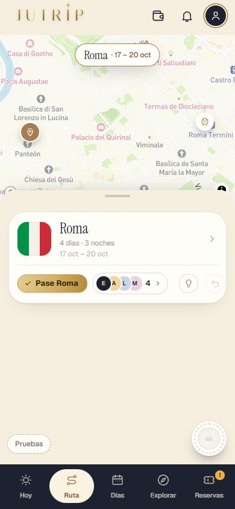
✅ Hecho — Invitados (Puede editar y Solo recomendar): caras con número, nunca [Compartir] ni [+ Invitar], «Viaje de Eric» debajo de «Roma»Dónde: RUTA, cuenta invitada §4a · 01 Hoja de invitar ✅ Hecho — Enlace con [Copiar], código, [Compartir el enlace] y «Personas del viaje · 4 ›»El enlace es de la app (…/?invitacion=CÓDIGO), no el «jutrip.app/v/…» del dibujo Dónde: RUTA > [Compartir], con compañeros §4a · 02 Lista ✅ Hecho — Etiquetas por permiso; al tocar a alguien, [Cambiar permiso] y [Quitar del viaje]; [+ Invitar a alguien]Dónde: RUTA > caras > tocar a una persona (dueño) 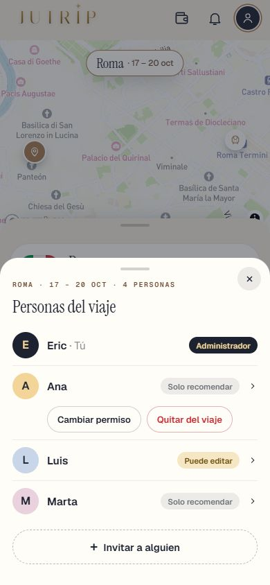
§4a · 03 Permiso de Ana ⚠️ A medias — Hoja con los tres permisos, Administrador en gris con candado y «Solo Eric», elegido en azul oscuro con ✓, [Guardar permiso]; aviso en la campanaHoja hecha y capturada. Aviso en la campana: creado por la BD y con texto («Eric te ha dado permiso para editar el viaje a Roma»), probado en PGlite; sin Supabase real no se ha visto en el móvil Dónde: RUTA > caras > Ana > Cambiar permiso (dueño); la campana de Ana 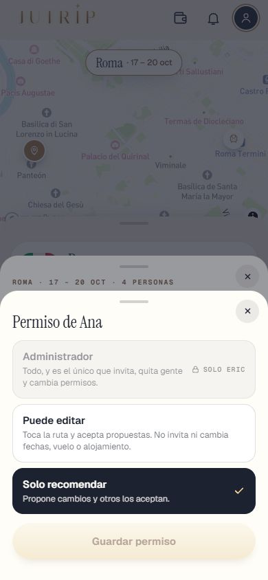
§4a · 04 Quitar ⚠️ A medias — «¿Quitar a Luis del viaje a Roma?», plaza del pase «3 de 4 usadas → Vuelve a ti», [Quitar a Luis] rojo y [Cancelar]Hoja hecha; el recuadro de la plaza sale con la 0036 y un pase de grupo (en la captura, sin Supabase, no hay recuadro) Dónde: RUTA > caras > Luis > Quitar del viaje (dueño con pase Grupo) 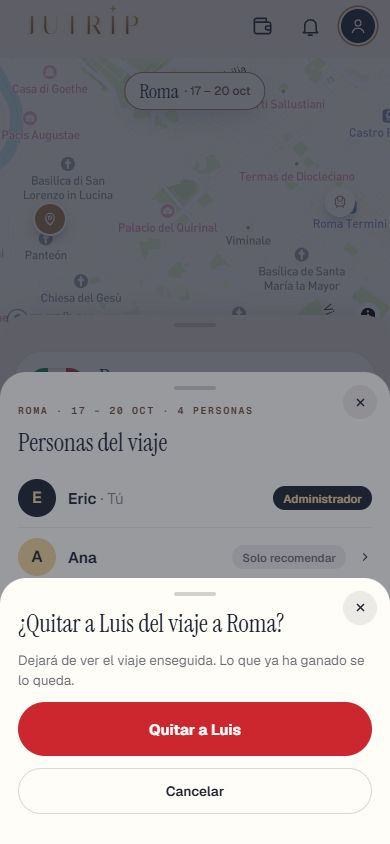
§4a · 04 Al quitarlo ⚠️ A medias — Deja de ver el viaje enseguida (en directo), la plaza vuelve a quien la compró, lo ganado se quedaProbado en BD (deja de verlo, plaza 4→3, la plaza se reasigna). El «en directo» usa Realtime: solo comprobable contra Supabase real y con la 0036 Dónde: Dos móviles: dueño quita, el otro mira el viaje abierto ❌ No hecho — Su propuesta sin enviar se borra; sus gastos [Para todos] aceptados se quedanNo tocado: la propuesta sin enviar es local (C) y los gastos son de D2; en el servidor no se borra nada de eso. Las propuestas ya enviadas se quedan (decisión mía) Dónde: — §4a · 05 Invitado ✅ Hecho — Lista sin botones, «· Tú» y [Salir del viaje] con confirmaciónSalir devuelve la plaza (probado en BD) Dónde: RUTA > caras, cuenta invitada 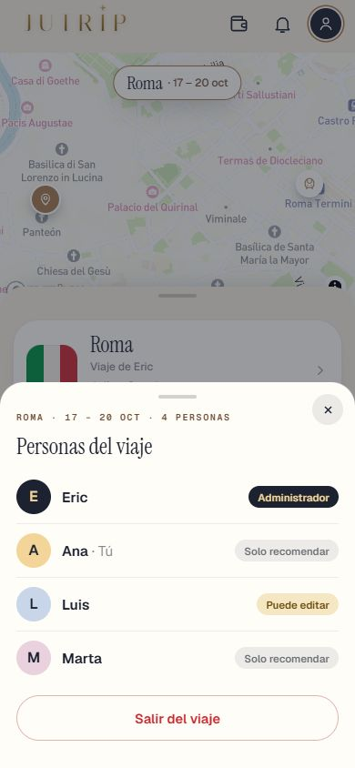
§4a · 06 Aviso a quien quitan ⚠️ A medias — En su campana: «Ya no formas parte del viaje a Roma»Aviso creado por la BD y con su texto (probado); con la app abierta, al llegar por Realtime deja de verse el viaje. No visto en móvil real Dónde: Campana del quitado §4a · Administrador ✅ Hecho — El administrador no puede quitarse ni salirBloqueado en la BD y sin botón de salir en pantalla para el dueño Dónde: RUTA > caras (dueño): no hay [Salir del viaje] §5 · Abrir un enlace ⚠️ A medias — No pasa por «Crear viaje» ni al abrir el enlace ni al tocar [Unirme]Hecho (App no pinta «Crear viaje» con invitación en marcha, y al unirse se abre directo ese viaje). Comprobado por código; el parpadeo real hay que verlo en el móvil con un enlace de verdad Dónde: Abrir ?invitacion=CÓDIGO con una cuenta nueva y tocar [Unirme] ⚠️ A medias — Ya unido, recargar o reabrir el enlace va directo al viaje; el código sale de la dirección al unirseLa BD dice ya_dentro y a qué viaje ir (probado); la app abre ese viaje sin la pantalla. Hay una recarga si el viaje aún no estaba cargado. Necesita la 0036 para el caso «reabrir enlace» Dónde: Invitado ya dentro: recargar y reabrir el enlace ✅ Hecho — Logo de JUTRIP pequeño, arriba y centrado, en «Eric te invita a su viaje a Roma»Sin captura propia Dónde: Abrir un enlace de invitación sin haber entrado ⚠️ A medias — Compartir sin Dúo/Grupo nunca da el pase al invitado (probar con cuenta normal)Comprobado en BD (ninguna plaza en pass_members) y en el código (el pase sale solo de passes/pass_members). El pase de Eric venía de su propia cuenta de administrador/prueba, no de la invitación. Falta probarlo con dos cuentas reales Dónde: Invitado normal: RUTA, pastilla «Pase Roma» con candado §6 · La propuesta ✅ Hecho — Fuera [Recomendar otra ruta] y el «modo propuesta»: el invitado cambia la ruta directamente en DÍAS/EXPLORAR y cada cambio va a su propuestaDónde: Invitado «Solo recomienda», antes del viaje: RUTA (ya no hay botón dorado) y DÍAS: mover, quitar o añadir una parada. 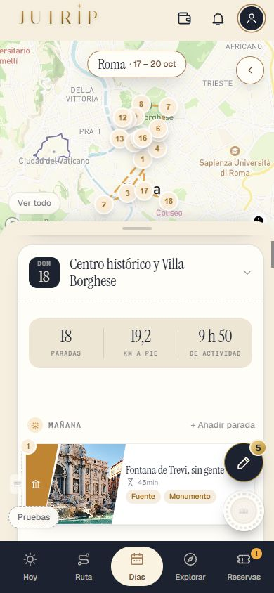
⚠️ A medias — Todo lo que añade el invitado va a su propuesta (+ Añadir parada, EXPLORAR, ficha…); nunca al viaje del dueñoProbado por EXPLORAR y por insertar/mover/quitar (todo cambio de la ruta se compara con la del dueño). «+ Añadir parada» y la ficha pasan por las mismas acciones del almacén pero no se pulsaron una a una en la prueba. La base de datos ya no deja al invitado escribir el viaje (RLS). Dónde: Invitado «Solo recomienda», antes del viaje: DÍAS › «+ Añadir parada» de un día, y EXPLORAR › Entradas › «+». 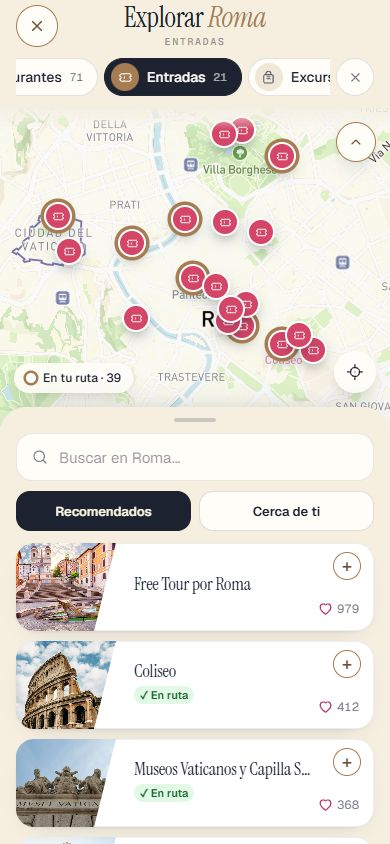
✅ Hecho — El aviso dice «Añadido a tu propuesta · jueves 26» con [Deshacer] que lo quita de la propuesta; el numerito del lápiz subeLas confirmaciones de EXPLORAR ahora llevan su [Deshacer] también para el invitado (antes salían sin él). Dónde: Invitado: añade un sitio desde DÍAS o EXPLORAR y mira el aviso de abajo y el lápiz. ✅ Hecho — Lo añadido se ve marcado como propuesta en la ruta del invitado (borde de puntos y «Propuesta»)Se marcan las paradas añadidas, llegadas de otro día y movidas. La captura de la parada marcada no está hecha (la prueba comprueba el atributo). Dónde: Invitado: DÍAS › abre el día donde has añadido algo. ✅ Hecho — Botón flotante: lápiz redondo con el numerito en oro, encima del de los logros (versión A), solo tras el primer cambio, en todas las pestañasSi ya enviaste y esperas respuesta, el lápiz sigue con el número en claro para poder ver lo enviado. Dónde: Invitado «Solo recomienda»: haz un cambio en DÍAS y mira abajo a la derecha; cambia de pestaña. ⚠️ A medias — El lápiz no tapa el botón de logros ni la última parada (espacio al final de DÍAS y EXPLORAR)Se deja un hueco de 150 px al final de DÍAS y de EXPLORAR. No comprobado en un móvil real con el viaje largo. Dónde: Invitado con un cambio: DÍAS y EXPLORAR, baja hasta el final. ✅ Hecho — Fuera la barra «Tu propuesta · Ver · Enviar a Eric»BarraDePropuesta.tsx borrado. Dónde: Invitado con cambios: no hay barra abajo. ✅ Hecho — Al tocar el lápiz, la hoja «Tu propuesta · N cambios» con la lista y [Enviar a Eric] siempre a mano; nunca se envía sin pasar por la listaDónde: Invitado con cambios: toca el lápiz. 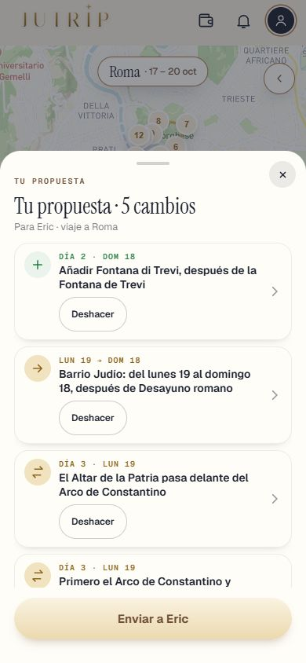
✅ Hecho — Un cambio por idea y en lenguaje normal, cinco tipos: orden en el mismo día, mover a otro día en UNA línea, quitar, añadir (icono y color, ›, [Deshacer])Añadí un sexto tipo, «Cambiar X por Y», porque «Cambiar parada» ya existía. Dónde: Invitado: haz uno de cada y abre la hoja del lápiz. ⚠️ A medias — Detalle al tocar una línea: [Antes]/[Ahora], mapa pequeño con km, «Movida/Sale/Entra/Nueva», dos días en un cambio de día, [Deshacer este cambio]El mapa pequeño es esquemático (puntos proyectados, no Mapbox) como en Design; los km son en línea recta. Dónde: Invitado: lápiz › toca una línea. 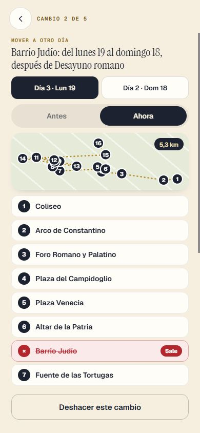
✅ Hecho — Dueño: [Rechazar] [Aceptar] en el detalle y luego «Aceptado ✓»/«Rechazado»Dónde: Dueño (administrador): campana › «Ana te propone N cambios» › toca una línea. 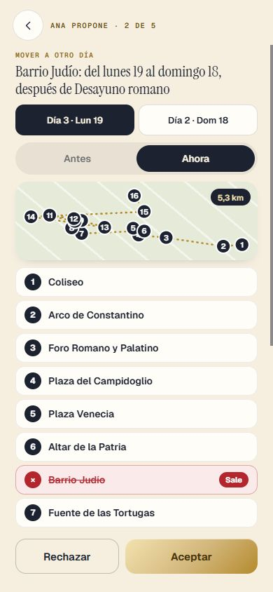
⚠️ A medias — Dónde queda lo que se mueve de día: arrastrado, ese sitio; con «Mover a», donde menos hay que andar de más (lógica de mejorHueco)Hasta hoy la app lo ponía AL FINAL del día (moveStopToDay añade al final, a la hora sugerida): Eric acertaba. Ahora «Mover a» usa mejorHuecoEnElDia (nunca antes de la primera parada: esa lógica no ofrece el hueco 0, así que el Arco en el día del Vaticano irá donde menos desvío haya entre dos paradas, no necesariamente al empezar). El arrastre a un sitio concreto ya respetaba el sitio. No se tocó el motor. Dónde: Cualquier cuenta: DÍAS › ··· de una parada › Mover a otro día; mira dónde cae. ✅ Hecho — La propuesta siempre enseña cómo quedan las cosas al final: mover dos veces actualiza la misma línea; devolverlo la quita; al enviar queda fijaDónde: Invitado: mueve una parada dos veces y devuélvela; abre el lápiz. ⚠️ A medias — Quién acepta: administrador y quien puede editar; si dos a la vez, vale el primeroSe comprueba en la app (lo ya decidido no se vuelve a decidir). Que el editor pueda escribir en la base de datos lo da la migración 0036 de B; sin aplicar. Dónde: Dueño o editor: campana › la propuesta. ⚠️ A medias — Campana del dueño «Ana te propone 5 cambios en tu viaje a Roma» con la misma lista, [Aceptar]/[Rechazar] por cambio y [Aceptar todos]La hoja y los textos están hechos y probados. El texto del aviso con el número y el destino necesita la migración 0039 (SIN APLICAR); sin ella dice «te recomienda otra ruta». Dónde: Dueño: campana › toca el aviso. 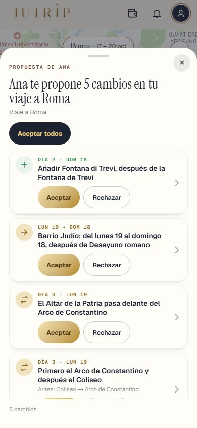
✅ Hecho — Al aceptar, el cambio se coloca donde decía o, si ese día cambió, donde mejor encaje; después «3 aceptados · 2 rechazados»Dónde: Dueño: acepta un cambio y revisa DÍAS; reabre el aviso. 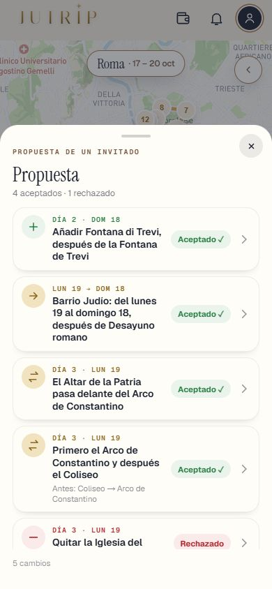
⚠️ A medias — Al invitado le llega «Eric ha aceptado 3 de tus 5 cambios» y, al tocarlo, su lista con cuáles sí y cuáles noTexto, hoja y apertura desde la campana hechos; el aviso real lo crea la migración 0039 (SIN APLICAR). Lo aceptado llega a su ruta por el directo de B; lo rechazado se quita de su ruta al ver la decisión. Dónde: Invitado: campana › «Eric ha aceptado…». ⚠️ A medias — Durante el viaje el invitado ya no propone (sin lápiz, sin cambiar la ruta); el resto sigue igualDesde el primer día con la hora del destino (tabla corta: Roma y Cancún; el resto, la hora del teléfono). Se esconden las herramientas de editar y el menú de la parada queda en ficha y cómo llegar. No hay un cerrojo central: un cambio por una vía sin ocultar no se bloquea. Dónde: Invitado «Solo recomienda», con viaje empezado: DÍAS, fichas y HOY. ⚠️ A medias — El día antes, con cambios sin enviar, aviso en la campana «Tienes 2 cambios sin enviar a Eric…»El cliente avisa al servidor (POST /api/avisos/sin-enviar) y el texto está; el tipo sin_enviar lo deja la 0035 (sin aplicar). No probado con base de datos real. Dónde: Invitado con cambios sin enviar, el día antes del viaje: campana. ✅ Hecho — Propuesta a medias sobre algo que el dueño quitó o cambió: se ajusta, el cambio sin sentido sale marcado y se quita (ajustarPropuestaAlViaje)Función pura, llamada desde hydrateTrip (también cuando llega el directo de B). Dónde: Invitado con cambios; el dueño quita una parada que el invitado había movido; abre el lápiz. 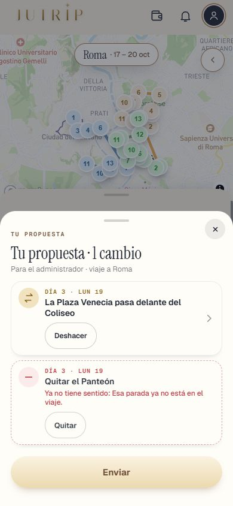
§6a · Free Tour del invitado ⚠️ A medias — El invitado ve el Free Tour en EXPLORAR igual que el dueño; añadirlo a un día es un cambio de su propuestaNo he podido reproducir el fallo: con la ruta de pruebas freeTourAvailable da true para el invitado y el Free Tour sale en Entradas (el catálogo no depende de la cuenta). Posible causa real: la ruta guardada del viaje de Eric sin curatedId en 2 días. Sin ese dato no he cambiado la condición. Con el motor, el Free Tour rehace los días: para el invitado queda como varios cambios de su propuesta. Dónde: Invitado: EXPLORAR › Entradas. §6b · Puntitos y rayitas ✅ Hecho — Quien solo recomienda: sin los tres puntitos del día; administrador y quien puede editar, como estabaDónde: DÍAS con tres cuentas: administrador, editor e invitado «Solo recomienda». ✅ Hecho — Las rayitas ≡ para arrastrar días solo para administrador y quien puede editar; qué pasaba hoy si un invitado cambiaba el orden de los díasHasta hoy el invitado «solo mirar» no tenía las rayitas (data-edit-tool); en una cuenta de invitado sin ese modo (la de Eric) reordenaba los días en SU teléfono, sin guardarlos (la base de datos no le deja) y sin que el dueño lo supiera. Ahora no las tiene. Dónde: DÍAS: mira el borde izquierdo de cada día con las tres cuentas. §6c · Menús de tres puntitos desde abajo ✅ Hecho — Menús del día y de la parada, la confirmación y «Mover a» salen como la hoja (tirador, ✕, se cierran deslizando o tocando fuera)Nuevas piezas: ui/MenuHoja.tsx (MenuHoja, HojaDelMenu, OpcionHoja), Hoja con prop baja y cierre deslizando por el tirador (vale para todas las hojas), ConfirmDialog reescrito sobre Hoja (lo usan también «Recuperar este día», fechas, excursiones). Estilo: la hoja clara de siempre (no el cuadro oscuro de antes). Dónde: DÍAS › «···» de un día o de una parada (dueño o con permiso de edición) 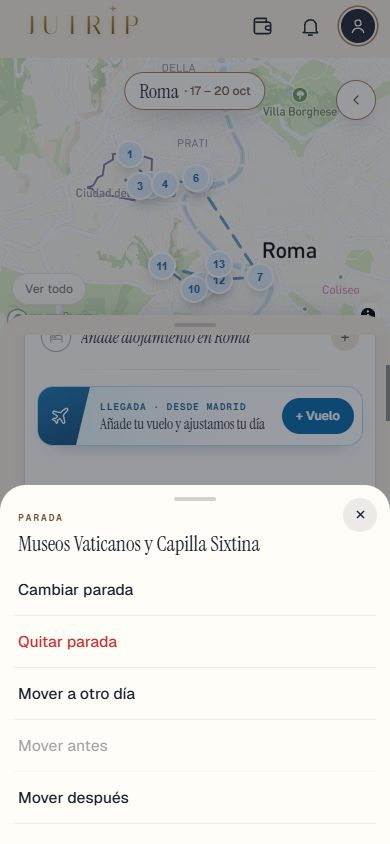
✅ Hecho — Arriba, el nombre de lo que se toca; hoja baja; opciones una debajo de otraEl día muestra «Sábado 17 · título del día»; la parada, su nombre. La hoja baja ocupa menos de la mitad de la pantalla (comprobado en la prueba). Dónde: DÍAS › «···» de un día 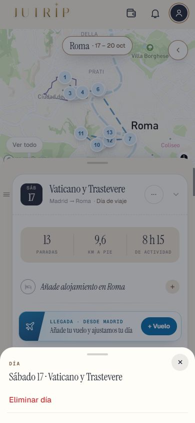
✅ Hecho — «Mover a» con una ruedita (como la hora del iPhone), «Ahora: jueves 26» arriba y [Mover aquí] debajoNuevo dayDetail/MoverADia.tsx sobre TimeListWheel (tipo lista). Los días de excursión entera y el de vuelta no salen en la rueda. La lista antigua ListaDeDias se queda solo en HOY («Pasarla a otro día»). Dónde: DÍAS › «···» de una parada › Mover a otro día 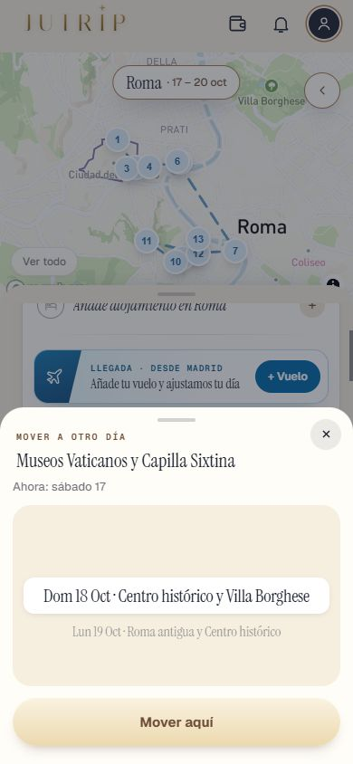
✅ Hecho — Confirmación «¿Seguro que quieres eliminar…?» como hojaDía: «¿Eliminar el …?» con ConfirmDialog; parada: «¿Seguro que quieres eliminar «X»?» [Cancelar] [Sí, eliminar]. Dónde: DÍAS › «···» de un día (que no sea el de llegada) › Eliminar día 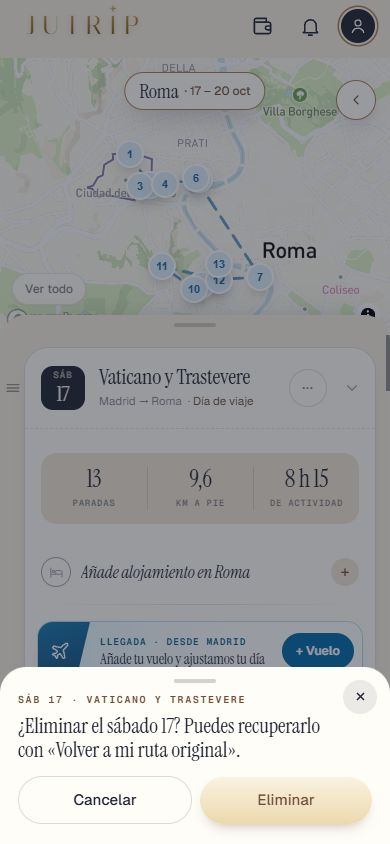
✅ Hecho — En toda la app, cualquier otro menú de tres puntitos que salga en medio de la pantallaRevisado: solo existían los de DÍAS (día y parada, también BreakCard/TrazoCards que usan el mismo StopMenu) y el del invitado (MenusDelInvitado.tsx, convertido; C lo ha reducido/retirado por su parte). Dónde: DÍAS §7 · «Cambiar hora» ✅ Hecho — Quitar «Cambiar hora» de las opciones de cada parada, para todosTambién se quitaron «Poner hora» y «Quitar hora» de los días libres (misma razón: la app ya no enseña horas). Dónde: DÍAS › «···» de una parada §8 · RESERVAS del invitado ✅ Hecho — Misma pantalla de RESERVAS que la del dueño (mismos bloques, datos, Falta/Listo); fuera la pantalla pobreDónde: Invitado (sessionStorage trazo:invitado=1 en dev): pestaña Reservas ✅ Hecho — Donde hay un dato, sale el dato (vuelo, alojamiento, entrada con día y hora)Comprobado con alojamiento y entradas; el vuelo usa el mismo componente que el dueño (no probado con un vuelo cargado). Dónde: Invitado: Reservas > abrir Llegada y vuelta / Alojamiento / Entradas 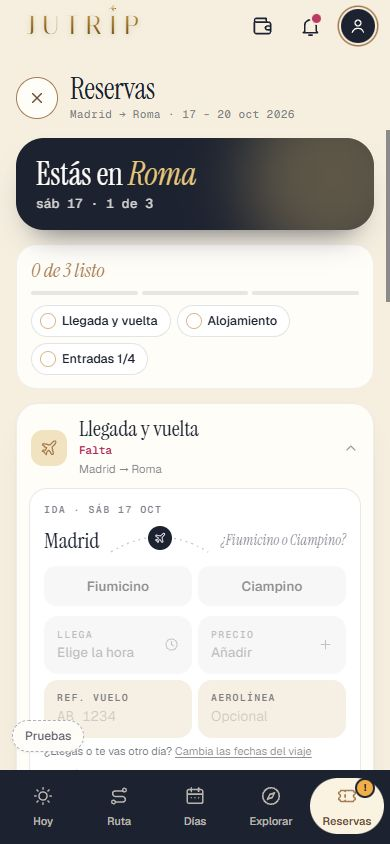
✅ Hecho — Campos y botones de editar en gris y sin poder tocarlos; al tocar, «Esto lo cambia Eric»Dónde: Invitado: Reservas > Llegada y vuelta > tocar «Llega» o un botón ✅ Hecho — Fuera «Esto es lo que ha reservado Eric. Aquí solo se mira.»Dónde: Invitado: Reservas ✅ Hecho — Llegada y vuelta en grisDónde: Invitado: Reservas > Llegada y vuelta ⚠️ A medias — Alojamiento en gris si el dueño lo ha puesto; si no, [Buscar alojamiento] activo y guardar solo el dueñoGris y Buscar activo comprobados. Guardar bloqueado para el invitado con un aviso corto («El alojamiento lo guarda Eric»); NO se le manda la idea al dueño (falta decidir el canal: propuesta de C). Dónde: Invitado: Reservas > Alojamiento ⚠️ A medias — Entradas, Free Tour y excursiones activos para el invitadoEntradas y Free Tour comprobados; excursiones usan sus propias reservas por el mismo mecanismo pero sin prueba específica. Dónde: Invitado: Reservas > Entradas y Free Tour / Excursiones 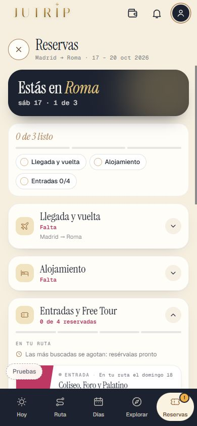
⚠️ A medias — Si el dueño tiene entrada de ese sitio: sale su día y hora y [Reservar la mía a la misma hora] con día y hora ya elegidosEl día y la hora llegan elegidos a la hoja; el botón abre la tienda externa (no admite fecha) y luego se guarda aquí con [Guardar]. Dónde: Invitado no incluido: Reservas > Entradas > Coliseo > [Reservar la mía a la misma hora] 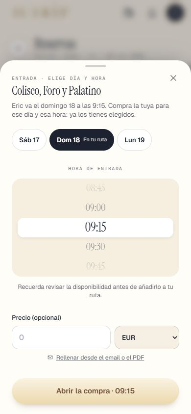
✅ Hecho — «¿Para quién es?» en el formulario de la entrada, solo en viaje compartido; sin compartir, como ahoraDónde: Dueño con gente en el viaje: Reservas > Entradas > Coliseo > Añádela 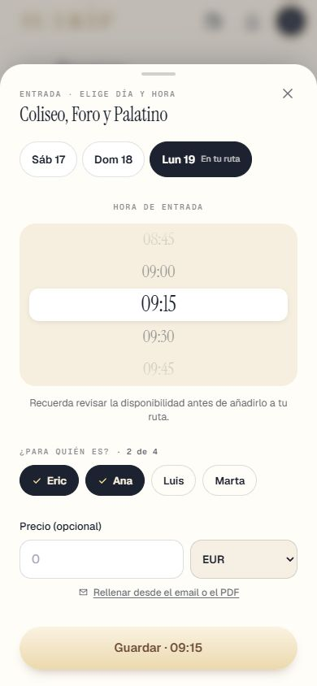
✅ Hecho — Pastillas por persona (marcada en oscuro con ✓), después de la ruedita y antes del precio, «2 de 4»; bajan de fila si no cabenEl dueño no se puede desmarcar. Dónde: Dueño con gente: formulario de la entrada ✅ Hecho — Reservas anteriores al compartir cuentan como «solo para mí» y el dueño puede editarlasSin paraQuien = solo el dueño; al pulsar Cambiar se abre con solo el dueño marcado. Dónde: Dueño: Reservas > una entrada ya reservada > Cambiar ✅ Hecho — Botón [Guardar · …] del formulario en champánYa era champán en la app (clase btn-champan); comprobado por estilo calculado. Dónde: Dueño: formulario de la entrada 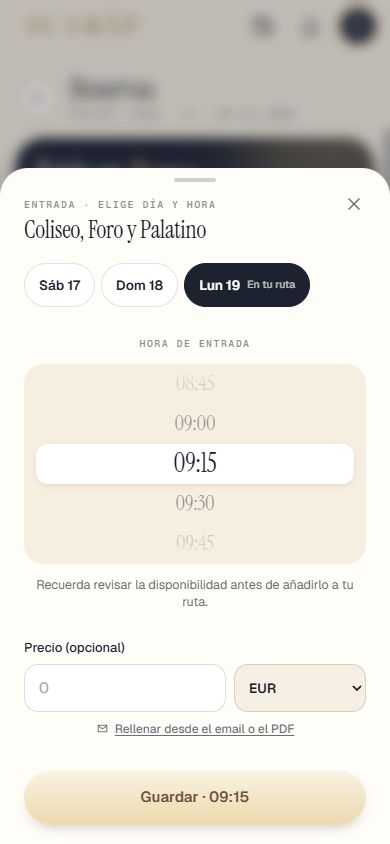
✅ Hecho — Más espacio entre secciones del formularioDónde: Dueño: formulario de la entrada ✅ Hecho — Fuera «Lo que pagaste en total, todas las personas.»Solo en el formulario de la entrada; la hoja de precio del vuelo (HojaPrecio) conserva su texto. El presupuesto por personas marcadas es de D2 (el campo paraQuien está disponible). Dónde: Dueño: formulario de la entrada ✅ Hecho — La ruta es una: la parada pasa al día y la hora de esa reserva para todosMecanismo de siempre (reservedId en la ruta del dueño); no se tocó el motor. Dónde: Dueño y invitado: pestaña Días 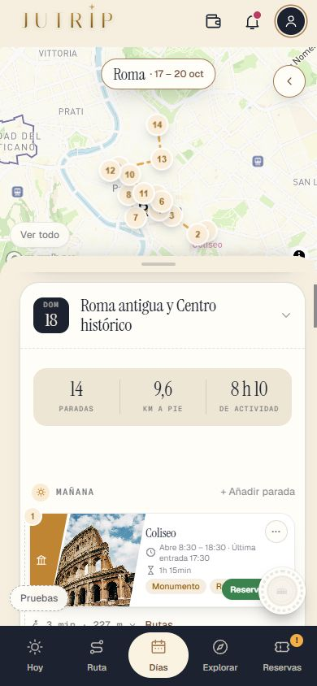
⚠️ A medias — DÍAS: etiqueta corta «Reservada ✓» (verde) para incluidos y «Comprar entrada» (frambuesa) para no incluidosSolo en viajes con gente; sustituye a la pestañita del icono. El detalle «Eric va el jueves 26 a las 8:00» está en la ficha (Entradas). Sin ver la ficha en captura. Dónde: Invitado: Días > abrir el día del Coliseo > esquina de la tarjeta 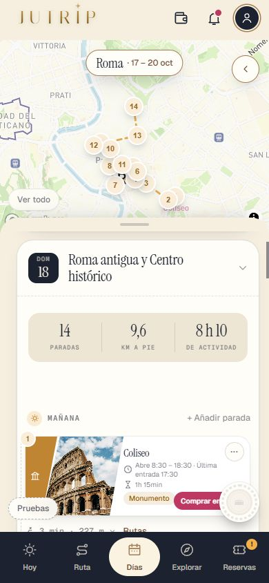
⚠️ A medias — Campana del incluido: «Eric ha reservado el Coliseo para ti: jueves 26, 8:00.»Se calcula en el móvil a partir de las reservas del viaje (no se crea un aviso en el servidor: falta la clave de servicio de Supabase); no llega como notificación al móvil. Dónde: Invitado incluido: campana de la cabecera (Días o Ruta) ⚠️ A medias — Campana del no incluido con [Reservar la mía a la misma hora] y [Ya la tengo]Igual que el anterior (calculado en el móvil). [Ya la tengo] abre la hoja de añadir partiendo del día y hora del dueño. Dónde: Invitado no incluido: campana 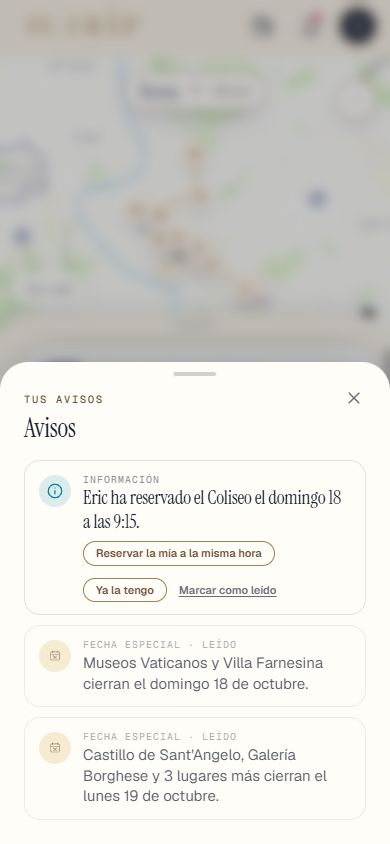
✅ Hecho — Al leerlo deja de contar y se queda en la listaDónde: Invitado: campana > Marcar como leído ⚠️ A medias — Lo que compre el invitado es suyo: sale en SU RESERVAS, no en la del dueñoSe guarda en el móvil (y en la tabla reservas_invitado si Eric aplica la migración 0038, SIN aplicar). Sin la migración no viaja entre dispositivos. Dónde: Invitado: guardar la suya; luego mirar como dueño 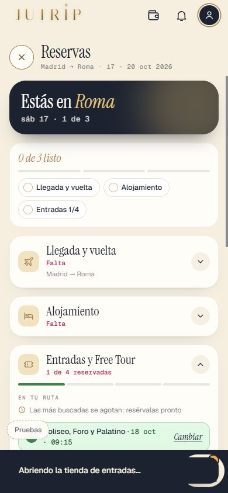
⚠️ A medias — Aviso «Tu entrada del Coliseo es el viernes 27, y en la ruta está el jueves 26» y poder proponer el cambioEl aviso sale en Reservas y en la campana. NO hay botón [Proponer el cambio]: la propuesta es de C; falta enganchar. Dónde: Invitado con su entrada en otro día: Reservas > Entradas, y campana §9 · El presupuesto compartido ✅ Hecho — 01 · el presupuesto de Ana: «de Eric» arriba, «Del grupo · 600 € · 300 € por persona» con el ojoDónde: Invitada (con o sin pase): cartera de arriba > Presupuesto. Toca el ojo para ver «300 € por persona». 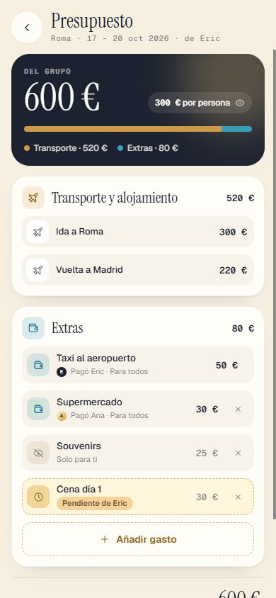
✅ Hecho — 01 · Extras: cada gasto con «Pagó Eric · Para todos»; el suyo pendiente en amarillo «Pendiente de Eric»; los suyos con ojo tachado y «Solo para ti»; [+ Añadir gasto]Cada gasto lleva una ✕ pequeña para quitarlo (solo los propios; el administrador y quien puede editar quitan los del grupo): Design no la dibuja, pero hacía falta para poder borrar. Dónde: Invitada: Presupuesto > bloque Extras. ✅ Hecho — 02 · el de Eric: «Eric y Ana» arriba, sus gastos «Solo para ti»Dónde: Dueño: cartera > Presupuesto, con al menos una persona invitada en el viaje. 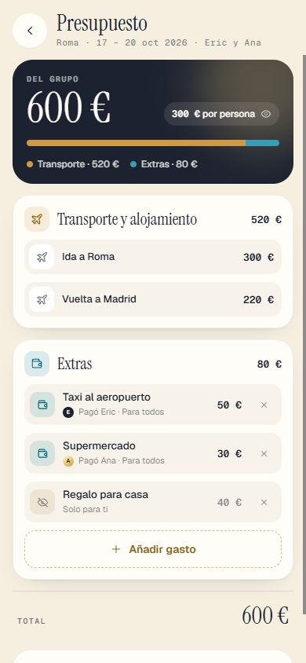
✅ Hecho — 03 · Ana añade [Para todos]: hoja con nombre, precio, [Para todos] [Para mí], «Se lo enviamos a Eric», «¿Quién lo ha pagado?» y [Enviar a Eric]; queda «Pendiente de Eric»Junto al precio hay un selector de moneda pequeño (el € por defecto), como el formulario de siempre. Dónde: Invitada «Solo recomendar»: Presupuesto > [+ Añadir gasto]. 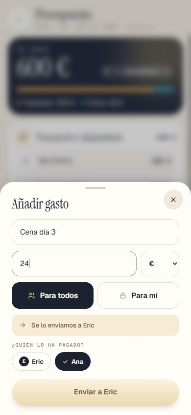
✅ Hecho — 04 · Ana añade [Para mí]: «Solo lo ves tú», sin «¿Quién lo ha pagado?», [Añadir gasto]; entra directo y solo lo ve ellaPrivacidad comprobada en la base de datos (PGlite con la 0037): ni el dueño ni nadie lo ve. Dónde: Invitada: [+ Añadir gasto] > [Para mí]. 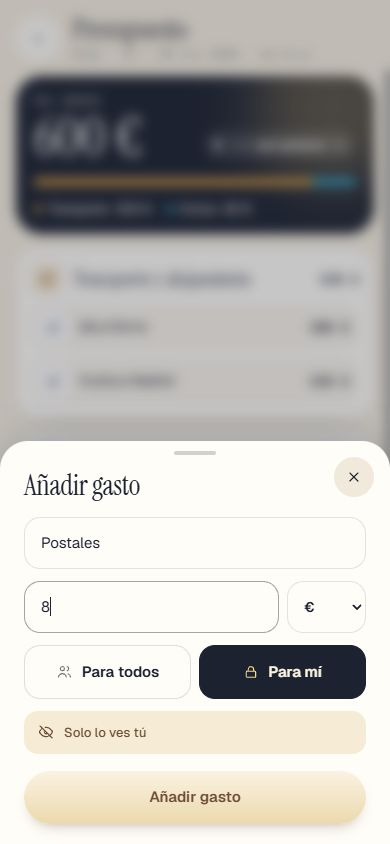
✅ Hecho — 05 · Eric añade [Para todos]: «Entra directo en el presupuesto», con «¿Quién lo ha pagado?»; también tiene [Para mí]Dónde: Dueño: [+ Añadir gasto]. 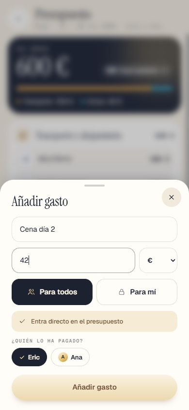
✅ Hecho — 06-08 · campana de Eric: «Ana quiere añadir al presupuesto» con el gasto dentro y [Rechazar] [Aceptar] en el mismo aviso; luego «✓ Aceptado · suma al grupo» o «Rechazado»; se queda en la listaSolo comprobado con servidor de mentira en la pantalla y con PGlite en la base de datos; el trayecto real por la red (Supabase) no se ha podido probar sin aplicar la 0037. Dónde: Dueño: campana de arriba (con una invitada que haya mandado un gasto [Para todos]). 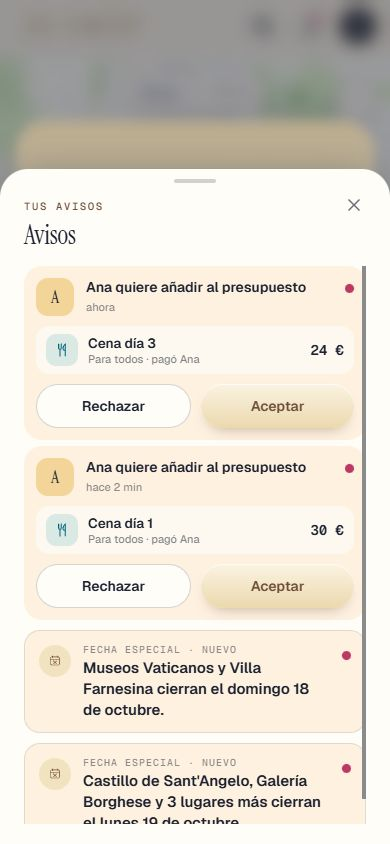
✅ Hecho — 07 · después de aceptar: «✓ Aceptado · suma al grupo»Dónde: Dueño: campana > [Aceptar]. 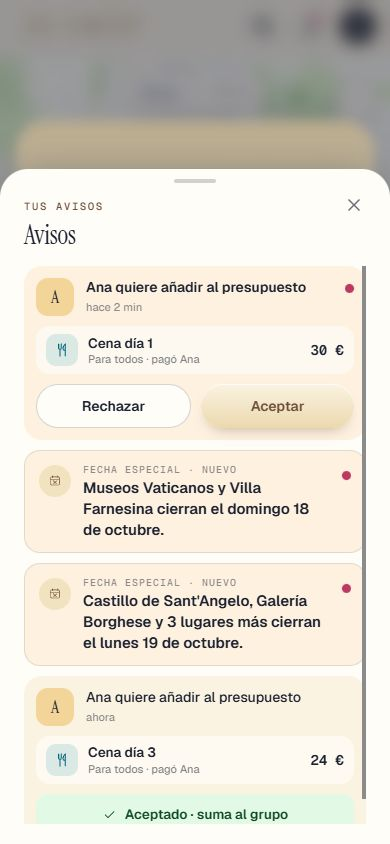
✅ Hecho — 08 · después de rechazar: «Rechazado»Dónde: Dueño: campana > [Rechazar]. 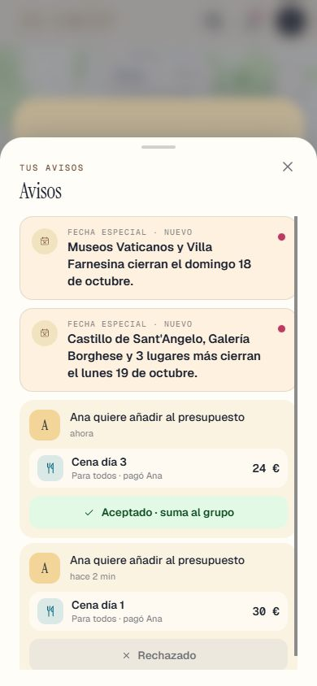
✅ Hecho — 09 · Ana tras aceptar: «Pagó Ana · Para todos», verde un momento, suben total y «por persona»Dónde: Invitada con la app abierta en el presupuesto mientras el dueño acepta. 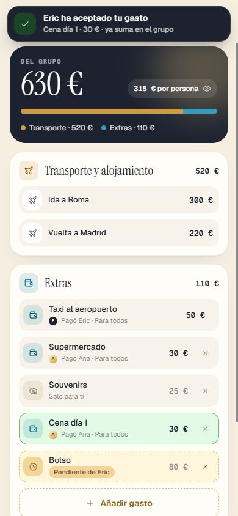
✅ Hecho — 10 · Ana tras rechazar: «Eric prefirió no sumarlo · ahora solo para ti»Dónde: Invitada con la app abierta mientras el dueño rechaza. 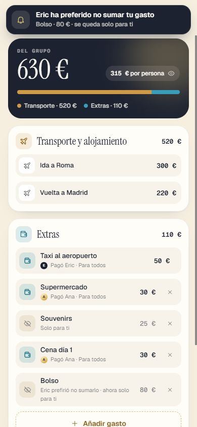
✅ Hecho — Aviso a Ana SIEMPRE en su campana («Eric ha aceptado tu gasto · Cena día 1 · 30 € · ya suma en el grupo» / «…ha preferido no sumar tu gasto… se queda solo para ti»)Lo crea un disparador de la base de datos (0037), con la app abierta o cerrada. El aviso al móvil (push) usa el mismo texto pero no se ha probado con PUSH_ACTIVO. Dónde: Invitada: campana de arriba. 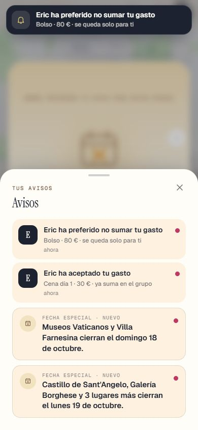
⚠️ A medias — Además, con la app abierta: la franja de arriba que se va sola y el cambio en directoHecho con Realtime de Supabase (canal sobre trip_gastos) + lectura cada 20 s y al volver a la app; la franja y el cambio están probados con un servidor de mentira. Realtime por la red real solo se verá con la 0037 aplicada en Supabase. Dónde: Invitada con la app abierta en cualquier pantalla mientras el dueño acepta/rechaza. ✅ Hecho — Permisos: [Para todos] de quien puede editar entra directo; los de «Solo recomendar» esperan; los aceptan administrador o quien puede editar (a todos les llega el aviso; vale lo del primero)Probado en la base de datos con Eric, Luis (editar), Ana y Marta (recomendar). Usa trip_members.permiso de la 0036: sin ella solo decide el administrador. Dónde: Con una cuenta «Puede editar»: Presupuesto > [+ Añadir gasto] (entra directo). Con «Solo recomendar»: espera. ✅ Hecho — «¿Quién lo ha pagado?» se guarda (una o varias personas); «¿Entre quién?» y quién le debe a quién, NO (10N2)Se guarda como lista de personas (pagado_por). Las pastillas admiten marcar a más de una. Dónde: [+ Añadir gasto] > [Para todos]. ⚠️ A medias — El «por persona» solo de los gastos del grupo, nunca de los [Para mí]Hecho para billetes, alojamiento, reservas y gastos [Para todos]. Las reservas todas cuentan como del grupo: cuando D1 guarde «¿Para quién es?» en cada reserva, el reparto por personas marcadas hay que enchufarlo aquí. Dónde: Presupuesto con el ojo; añade un [Para mí]: el «por persona» no se mueve. ✅ Hecho — Extras en nuestro azul de Extras, con la cartera en el apartado y en cada gastoEl pendiente lleva un reloj amarillo y el «solo para ti» un ojo tachado (como Design). La cartera del apartado también sale ahora en el Extras de un viaje sin compartir. Dónde: Presupuesto > Extras. ✅ Hecho — Precios «334 €» con el símbolo detrásTodo sale del formateador de la app; la prueba 6z2 sigue en verde. Dónde: Presupuesto y campana. ✅ Hecho — Sin compartir, el presupuesto se queda como ahora (sin [Para todos]/[Para mí] ni «¿Quién lo ha pagado?»)También se queda así si la 0037 no está aplicada (la app lo detecta). Dónde: Dueño sin invitados: cartera > Presupuesto. 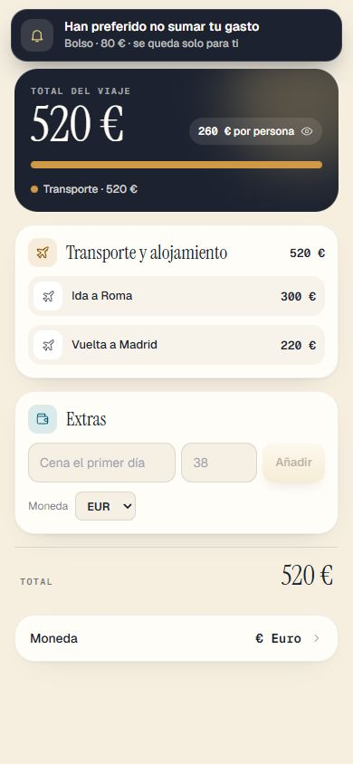
§10 · En directo ⚠️ A medias — Con la app abierta, el cambio del dueño llega solo, con la línea «Eric ha cambiado el viaje.»Realtime de Supabase (trips, trip_members, avisos) + refresco al volver y cada 30 s; lógica probada con un bus de mentira. La red de Realtime solo se prueba contra Supabase real con la 0036 Dónde: Dos móviles: el dueño quita un día, el invitado mira RUTA ⚠️ A medias — Siempre un aviso en la campana, en lenguaje normal (ha quitado 2 días, ha añadido X al sábado 28, ha cambiado las fechas); varios se juntan; al tocarlo lleva a la ruta ya cambiadaTextos y unión probados en BD. Los nombres van sin artículo («ha añadido Fontana di Trevi al sábado 28») Dónde: Campana del invitado, tocar el aviso ✅ Hecho — Con la app cerrada, al abrir carga el viaje de ahora; nunca hay que recargarLa carga de siempre más el refresco al volver a la app Dónde: Cerrar la app del invitado, cambiar el viaje, abrirla ⚠️ A medias — Una propuesta a medias sobre algo que el dueño quitó sale marcadaDejo el evento y el almacén useViajeEnDirecto (días y paradas quitadas) y la función cambiosEntreRutas; marcarlo en la propuesta es de C Dónde: Invitado con propuesta a medias ✅ Hecho — Cuando el dueño acepta una propuesta, el invitado ve la ruta cambiada en directoAceptar guarda la ruta y eso dispara el mismo cambio en directo (sin Supabase real no visto) Dónde: Dos móviles ⚠️ A medias — Los cambios de quien puede editar llegan a todos (también al administrador) con su avisoProbado en BD (aviso a todos menos al autor, incluido el dueño). El editor guarda solo ruta y lista de deseos Dónde: Cuenta «Puede editar» cambia algo; mirar el dueño §11 · Elegir una cosa u otra ✅ Hecho — Componente compartido: lo elegido en azul oscuro #1C2230 con texto claro e icono en oro; lo no elegido en blanco con borde finoui/Elegir.tsx: InterruptorElegir y PastillaElegir (API documentada en el fichero; D1 y D2 ya lo usan). Dónde: EXPLORAR, Reservas, presupuesto 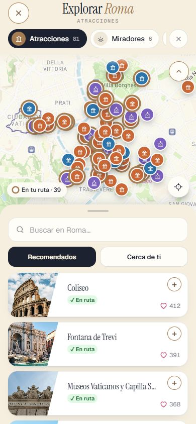
✅ Hecho — [Recomendados] [Cerca de ti] de EXPLORAR con este estilo; pruebas actualizadasTambién el mismo par en «Añadir parada» (AddStopScreen) y el [Roma | Excursión] del día con excursión (DayInterruptorSwitch). pruebaTanda10O_datos actualizada. Dejados como estaban: pestañas de la ficha (ya en oscuro), selectores del formulario (ya en tinta), y listas de una fila (Moneda, título, días a cambiar). Dónde: EXPLORAR › Atracciones (arriba); DÍAS › + Añadir parada; día 4 con excursión ✅ Hecho — «¿Para quién es?» de Reservas y «¿Quién lo ha pagado?» del presupuestoLas dos usan las pastillas de Elegir.tsx (azul oscuro con ✓ en oro). Dónde: RESERVAS › añadir entrada (viaje compartido); presupuesto › añadir gasto §12 · La prueba ✅ Hecho — Prueba nueva pruebaTanda10N (cabecera, compartir, propuesta, reservas y presupuesto)418 comprobaciones · 0 fallos (cabecera 59, compartir 97, propuesta 59, reservas 55, presupuesto 148); las tres partes que dieron «no ha dado resultado» en una pasada eran la pantalla de «ruta rápida» de un Vite con horas abierto: con un Vite recién arrancado pasan. Dónde: No es de móvil. ✅ Hecho — La batería rápida y pruebaJutrip (si algo falla solo al correr con las demás y solo pasa solo, se dice)En la batería completa fallaron 14 pruebas. Siete eran expectativas antiguas que la 10N cambió a propósito (la cabecera con logo, la cartera única, la hoja de confirmar, «Hoy te dará» con la lista de la película, la cartera del invitado y el menú de «Mover a»): ya actualizadas, pasan solas. Las demás (pruebaJutrip, pruebaTanda10B, pruebaTanda10P_sorteo y los tres envoltorios 10O, 10P y 10N) fallaron por carga o por la pantalla de ruta rápida; solas pasan todas con 0 fallos. Quedan a arreglar más adelante, como se pidió. Dónde: No es de móvil. ✅ Hecho — Capturas en docs/dias/capturas_jutrip/ y esta página a tamaño de móvilDónde: Esta página. §13 · El informe ✅ Hecho — Apartado «10N» en docs/dias/INFORME_TANDA10B.md, con lo que no se ha podido hacer igual que en Design, y esta lista al finalDónde: No es de móvil. Todas las capturas
10n_cabecera_confirmar_dia 10n_cabecera_elegir_explorar 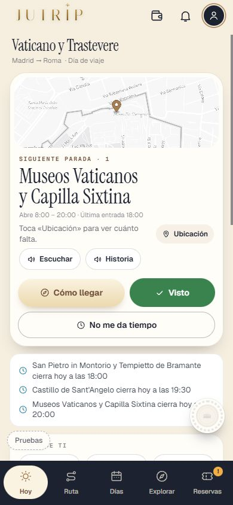
10n_cabecera_hoy 10n_cabecera_hoy_antes 10n_cabecera_menu_dia 10n_cabecera_menu_parada 10n_cabecera_mover_a 10n_cabecera_pastilla_sin_pase 10n_cabecera_ruta 10n_compartir_01_tarjeta_sin_compartir 10n_compartir_02_tarjeta_compartida 10n_compartir_03_personas_administrador 10n_compartir_04_fila_abierta 10n_compartir_05_permiso_de_ana 10n_compartir_06_quitar_a_luis 10n_compartir_07_hoja_de_invitar 10n_compartir_08_tarjeta_del_invitado 10n_compartir_09_personas_invitado 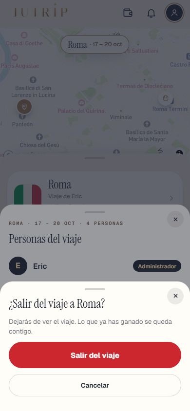
10n_compartir_10_salir_del_viaje 10n_presupuesto_01_ana 10n_presupuesto_02_eric 10n_presupuesto_03_ana_para_todos 10n_presupuesto_04_ana_para_mi 10n_presupuesto_05_eric_para_todos 10n_presupuesto_06_eric_campana 10n_presupuesto_07_eric_aceptado 10n_presupuesto_08_eric_rechazado 10n_presupuesto_09_ana_aceptado 10n_presupuesto_10_ana_rechazado 10n_presupuesto_11_ana_campana 10n_presupuesto_12_sin_compartir 10n_propuesta_a_medias 10n_propuesta_detalle_mover_dia 10n_propuesta_dias_con_lapiz 10n_propuesta_dueno_ana_propone 10n_propuesta_dueno_decidida 10n_propuesta_dueno_detalle 10n_propuesta_explorar_free_tour_invitado 10n_propuesta_hoja_ana 10n_reservas_campana_no_incluido 10n_reservas_dias_etiqueta_incluida 10n_reservas_dias_etiqueta_no_incluido 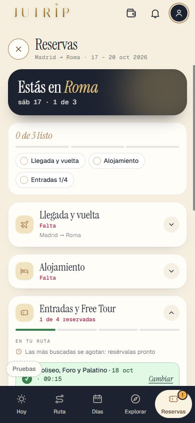
10n_reservas_dueno_entradas 10n_reservas_dueno_para_quien 10n_reservas_dueno_sin_compartir 10n_reservas_invitada_incluida 10n_reservas_invitado_gris 10n_reservas_invitado_la_suya 10n_reservas_invitado_misma_hora_compra 10n_reservas_invitado_misma_hora_tarjeta 10n_reservas_invitado_no_cuadra